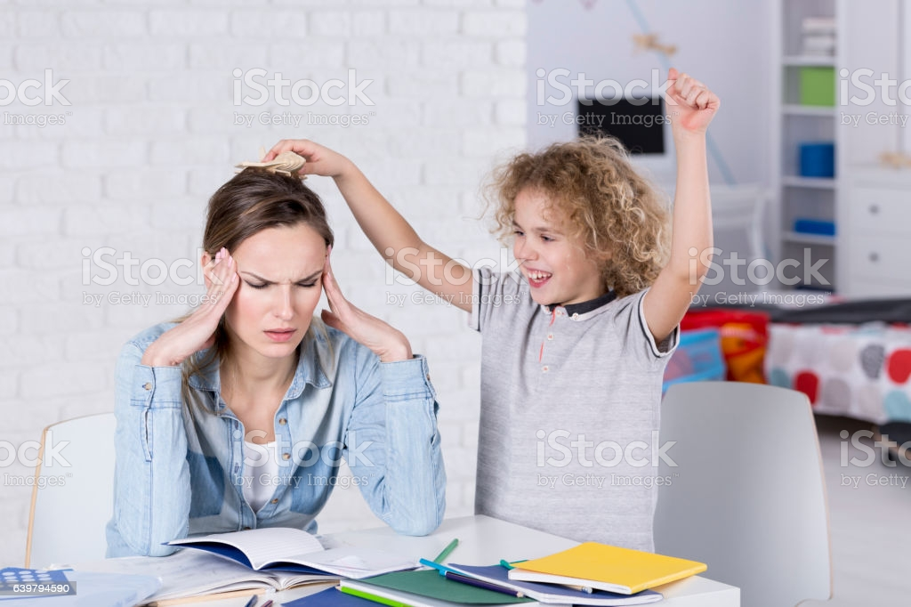
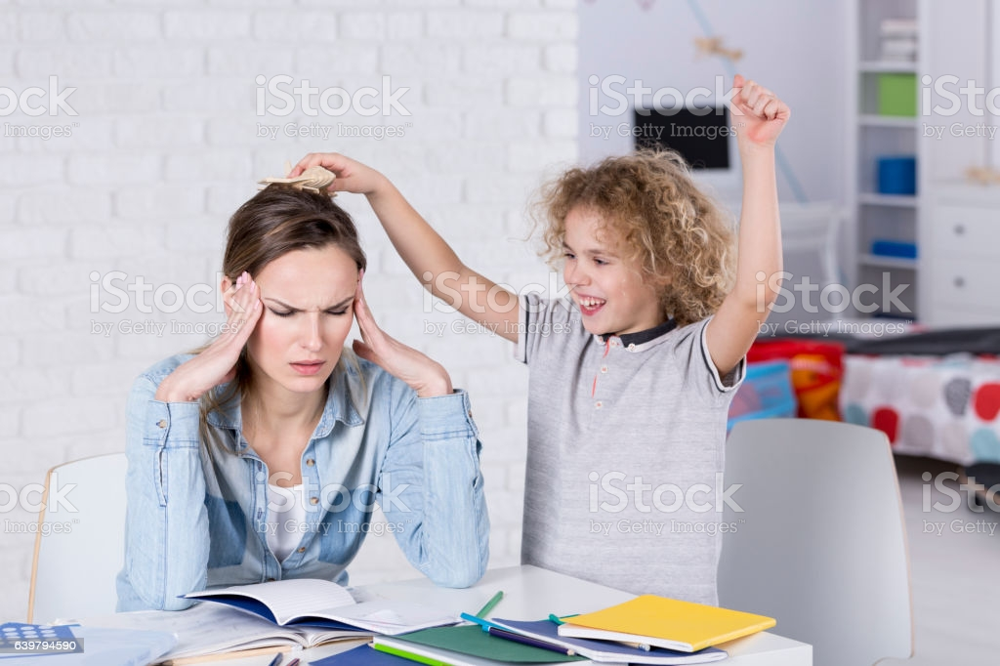

Clown music is better than any underground trading service. Are other illegal services like this as clownified as Clown Music? NO! If you find another one like us we'll beat it by 60%, unless financially impossible.
Other services who take children usually sell them to someone else after, but Clown Music is better than that. Maybe if a toenail of your child is sacrificed to the clown gods they can become one of us and stay with Clown Music foever. Apart from that, we keep them and once they are ready, we release them into the wilderness to become a wild clown.
This is a former Clown Music child before and after he was sold about 34 years ago
Clown music will give you money for your dumb and silly children so you can afford to buy a really big coffin for your horse's funeral or maybe you can spend that money on a dress/suit for your cat's wedding. We don't care what you do with the money, which is why you should consider us, and not the other services.
Here are some facts about us:
- We are creating a sequel to Legends of Adlez: Breaths of the Wilderness, as well as Creature Streets: Unexplored Areas.
- Or favourite candy is Sour Children.
- We have a pet spider and his name is Gerard. He is emo.
- We are trans clowns. (Clowns who were born human, but always identified as a clown)
 
